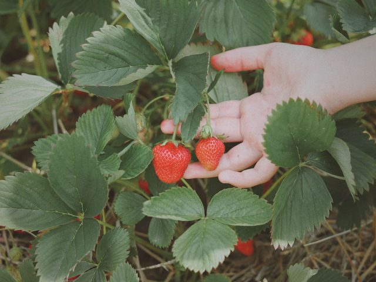

VOCABULARY · 主題 2000 字 UNIT 37
Other verbs (3)．其他動詞 (3)
日常動作的動詞，共 38 個（kiss 到 appear）。注意 take、make、put、run 的常用片語和不規則三態。
共 38 個單字．點 🔊 聽發音

1kissv.
親吻
第三人稱 kisses
Mom kissed the baby on the cheek.媽媽親了寶寶的臉頰。

2laughv.
笑
laugh at 嘲笑
We laughed at his funny story.我們聽了他好笑的故事哈哈大笑。
3leavev.
離開；留下
三態 leave／left／left
The train leaves at ten.火車十點開。
4listv./n.
列出；名單
也可當名詞
Mom made a shopping list.媽媽列了一張購物清單。
5makev.
做；使得
三態 make／made／made
Let's make a cake for Dad.我們來幫爸爸做蛋糕吧。
6meetv.
遇見；認識
三態 meet／met／met
Nice to meet you.很高興認識你。
7missv.
想念；錯過
I missed the bus this morning.我今天早上錯過了公車。
8movev.
移動；搬家
We moved to Kaohsiung last year.我們去年搬到高雄。
9openv.
打開
相反 close
Open your book to page 15.把書翻到第 15 頁。

10packv.
打包
Pack your bag before the trip.旅行前把行李打包好。
11parkv.
停（車）
也可當名詞：公園
You can't park your car here.你不能把車停在這裡。
12pastev.
黏貼
copy and paste 複製貼上
Paste the picture on the paper.把圖片貼在紙上。

13pickv.
挑選；採摘
pick up 接（人）；撿起
We picked strawberries on the farm.我們在農場摘草莓。

14plantv.
種植
也可當名詞：植物
Let's plant some trees.我們來種一些樹吧。

15pullv.
拉
相反 push
Pull the door to open it.把門往外拉才能打開。

16pushv.
推
Don't push. Wait in line.別推，排隊等。
17putv.
放
三態 put／put／put；V-ing putting
Put your books on the desk.把你的書放在桌上。
18risev.
升起；上升
三態 rise／rose／risen
The sun rises in the east.太陽從東方升起。
19rollv.
滾動；捲
The ball rolled down the hill.球滾下山坡。
20runv.
跑；經營
三態 run／ran／run；V-ing running
He runs every morning.他每天早上跑步。
21restv.
休息
也可當名詞
Let's rest here for a while.我們在這裡休息一下吧。
22shakev.
搖動；握（手）
三態 shake／shook／shaken
They shook hands and said hello.他們握手打招呼。
23shoutv.
喊叫
Don't shout. I can hear you.別大叫，我聽得到。
24smokev.
抽菸；冒煙
Smoking is bad for your health.抽菸對健康有害。
25signv.
簽名
也可當名詞：標誌
Please sign your name here.請在這裡簽名。
26standv.
站立；忍受
三態 stand／stood／stood
The boy standing there is my brother.站在那裡的男孩是我弟弟。
27takev.
拿；帶；搭乘；服（藥）
三態 take／took／taken
Take this medicine three times a day.這個藥一天吃三次。
28tellv.
告訴；分辨
三態 tell／told／told
Please tell me the truth.請告訴我實話。
29throwv.
丟；扔
三態 throw／threw／thrown
Don't throw trash on the ground.不要把垃圾丟在地上。
30touchv.
接觸；摸
Please don't touch the paintings.請不要觸摸畫作。

31typev./n.
打字
也可當名詞：類型
She can type very fast.她打字打得很快。
32usev.
使用
May I use your pen?我可以用你的筆嗎？

33walkv.
走路；散步
walk the dog 遛狗
I walk to school every day.我每天走路上學。

34wavev.
揮手；揮動
也可當名詞：波浪
She waved goodbye to us.她向我們揮手道別。

35mopv.
拖地
過去式 mopped
Dad mopped the floor after dinner.爸爸晚餐後拖了地。
36agreev.
同意
agree with 同意（某人）
I agree with you.我同意你。
37allowv.
允許
be allowed to V 被允許…
Smoking is not allowed here.這裡不准抽菸。
38appearv.
出現；似乎
相反 disappear
A rainbow appeared after the rain.雨後出現了一道彩虹。
FOCUS
不規則動詞三態
| 原形 | 過去式 | 過去分詞 |
|---|---|---|
| leave | left | left |
| make | made | made |
| meet | met | met |
| put | put | put |
| rise | rose | risen |
| run | ran | run |
| shake | shook | shaken |
| stand | stood | stood |
| take | took | taken |
| tell | told | told |
| throw | threw | thrown |
FOCUS
常用片語
| 片語 | 意思 |
|---|---|
| pick up | 撿起；接（人） |
| put on／put down | 穿上／放下 |
| take a bus／take medicine | 搭公車／吃藥 |
| make a cake／make friends | 做蛋糕／交朋友 |
| shake hands | 握手 |
| laugh at | 嘲笑 |
| agree with | 同意某人 |